galleria | ulivi
1953- bosco di ulivi
Pastello su carta cm. 34x24.
Un grande edificio appena accennato sullo sfondo di una piantagione di ulivi in primo piano riporta l'attenzione dell'artista alla dimensione naturalistica e paesaggistica con l ' ausilio di una tecnica (il pastello) solitamente confinata agli studi, alle preparazioni agli appunti dal vero.
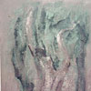 |
Olio su foglio di masonite zigrinata cm. 73x60.
Sono ora le nodosità e le asprezze dei tronchi a prevalere, talvolta oggetto quasi esasperato di rappresentazione, talvolta associate a tenui accenni di chiome, sempre comunque caricate di profondi significati intrinseci. E' probabilmente in questo periodo che l'artista viene elaborando il concetto di personificazione dei soggetti arborei, come indica la citazione carducciana apposta sul retro del quadro.
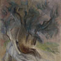
1967 - ulivo di Grecia
Tecnica mista su foglio di masonite cm. 73x60.
Talvolta un senso di moto pare pervadere le "presenze" degli olivi oggetto di energica semplificazione formale e i dipinti assumono cadenze a cui una gestualità musicale non deve risultare del tutto estranea.
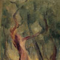
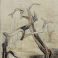
1974 - spasimo degli ulivi bruciati
Pastelli colorati e carboncino su cartoncino cm 48,2 x 34.
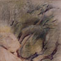
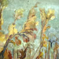
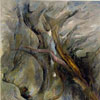
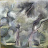
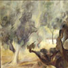
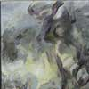
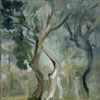
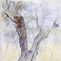
Pastelli colorati su carta cm. 23,3x20,9.